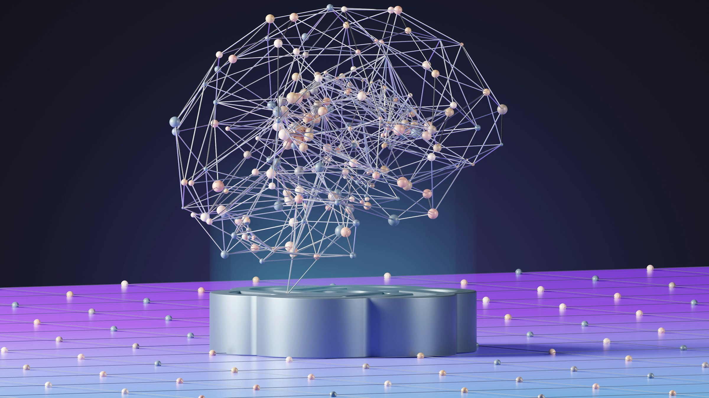

As seasoned administrators who have sat in district leadership, we work alongside superintendents to align solutions with your strategic priorities, ground decisions in evidence, and build the capacity your teams need to sustain results.
Everything we do points toward outcomes that last — for students, teachers, and families.
PDSA is a proven inquiry and improvement methodology with deep roots in healthcare, manufacturing, and education — advanced for schools through the Carnegie Foundation for the Advancement of Teaching, Learning to Improve, and the Networked Improvement Community model. Not a packaged intervention with a single effect size: a disciplined way to learn while doing.
Improvement starts with a problem named in measurable terms and a working theory of how a change might move it. The Plan phase is where the consultant earns trust — before anything is tried, the question itself has to be worth answering.
The point of Do is not implementation. It is to generate evidence about whether the working theory holds. Resist the temptation to scale before you have learned.
Study is the discipline of comparing prediction to result and resisting the urge to oversell either. This is the phase that protects the work from confirmation bias and from premature scaling.
The cycle closes with a decision and reopens with a sharper question. Improvement is iterative by design — the next problem worth solving is rarely the one you started with.
Each service is designed to plug into your district's existing strategy and PDSA work — not replace it. We move at the pace your team can sustain.
Full-cycle coaching across Plan, Do, Study, and Act — from naming the problem worth solving to deciding whether to adopt, adapt, or abandon what you tested.
Grounded in improvement science and Networked Improvement Community practice.
We curate the materials your team needs to ground PDSA work in evidence — data sets, presentations, survey forms, data-dive protocols, and the supporting artifacts that turn raw data into a productive conversation.
Proficient across any data structure, format, or curation need the cycle requires.
We work with administrators to lead adults — specific protocols that make meetings accomplish objectives and ensure learning actually occurs in the room.
Trained through CLEE and Deloitte in adult-learning facilitation.
Dashboards, surveys, micro-websites, presentations, advertisements — the artifacts your team needs to communicate insight, support decisions, and reach the audiences that matter most.
Designed to work hard and look the part.
Each is an engagement type we have led from inside district leadership — not theory, not a packaged program. The PDSA cycle is the method; these are the problems we know how to take on.
Diagnose the root cause at federally identified sites, name the targeted change, and build the site team's capacity to lead it through to a measurable outcome.
Coach districts through DA cycles — student-group analysis, evidence-based action selection, and the documentation that holds up under state review.
PDSA work aimed at subgroup outcomes that have not moved for years — Foster Youth, EL, LTEL, SED, and the student-group intersections that hide inside averages.
Targeted action design for CAST, CAASPP, and ELPAC — instructional alignment, test-readiness routines, and reading the data to set the next cycle.
Build the shared mental model that lets a school be led, not just managed — what good instruction looks like, what supervision actually examines.
Adult-learning facilitation for cabinet, leadership teams, and PLCs — protocols that move shared decisions and align the people who carry them out.
CLEE and Deloitte-trained protocols for the conditions adults actually learn under — psychological safety, productive struggle, and shared meaning-making that turn the room into outcomes.
Presentations, survey forms, predictive data, dashboards — the artifacts that turn what you already know into evidence the team can act on.
If you are facing a problem worth solving, we would like to hear about it — before the proposal, before the scope, before anything is sold. The first conversation is always discovery.
These are the questions we’d open with — to ground the work in your context before any proposal is made.
What is your identified problem of practice, and what issue are you trying to solve?
What have you already done to try to correct this issue?
What outcome are you seeking, and what is your working theory?
Who are the key stakeholders involved in this issue, and what PLCs, if any, have been formed to address it?
What do you know about your stakeholders’ business chemistry?
What specific training do you have related to adult facilitation, and what research-based protocols have you used to facilitate adult meetings?
What data do you currently review related to your problem of practice, and how often do you review it?
What protocols do you use to analyze the data?
Most districts have multiple existing funding mechanisms that can cover this engagement — federal, state, and local. Six of the most common, with how each can pay for the work:
Federal Title I set-aside for schools identified through the California Dashboard. Funds can support consulting tied to a site's CSI plan — needs assessment, evidence-based interventions, monitoring.
California state funds for schools serving high-need student populations — high SED concentration, non-stability above 25%. Designed for targeted, site-specific improvement work.
State technical-assistance funding for LEAs identified for underperforming student groups. Commonly used to bring in external coaching, data-dive protocols, and adult-learning facilitation.
Generated by enrollment of foster youth, English learners, and low-income students. Pays for consulting that increases or improves services for unduplicated pupils.
Federal professional-learning funds. The natural home for consultant-led training, adult-learning facilitation, and instructional or leadership coaching.
One-time and recurring state grants with allowable-use clauses that include consulting for academic intervention, expanded learning, and credit recovery.
Per the California Department of Education, LEAs receiving ESSA Section 1003 school improvement funds must spend them on evidence-based interventions and activities directly related to CSI plan development and implementation. The six allowable categories below — verbatim from CDE — map directly to our service offerings.
Tell us about your district. We’ll be in touch to learn more.